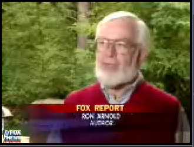

Center
for the Defense of Free Enterprise
Center
for the Defense of Free Enterprise
Ron Arnold
HOME ISSUES OPPOSITION PROJECTS DEFENDERS WISE USE BOOKSTORE ARCHIVE
|
Ron Arnold |
|
HOME ISSUES OPPOSITION PROJECTS DEFENDERS WISE USE BOOKSTORE ARCHIVE |
Here's the FOX NEWS story at http://www.foxnews.com/story/0,2933,100354,00.html
For the story behind the story, click here.
Spotted Owls Endangered by Logging or Nature?
Friday, October 17, 2003
By Dan Springer

SEATTLE The spotted owl is one of the most studied, protected animals in U.S. history but despite efforts to halt the logging of their natural habitat, scientists say its recovery is endangered and it may become extinct for completely natural reasons.
Protective efforts for the owls led to timber industry wars in the 1980s and the walling off of millions of acres of forest to loggers but the spotted owl is being replaced by a heartier feathered foe the barred owl.
"Natural systems are pretty unpredictable, Eric Forsman, a U.S. forest service biologist, said. When you set about trying to manage a particular species there are lots of things that can happen that are unplanned."

Author Ron Arnold said this discovery vindicates the loggers who claimed all along the owls' precarious position wasnt their problem. What's happening is a natural process, he said. "You can't turn nature into a museum even though environmentalists try. But I think they should be very apologetic and do some reparations put the loggers back.
Studies show more than 22,000 logging jobs vanished because of the battle to save the spotted owl, devastating small mill towns throughout the Northwest. They're jobs that despite this new research are likely gone forever as environmental groups refuse to give an inch."
The Audubon Society wants all old-growth logging banned and more tree-cutting restrictions on private land, if too late for the spotted owl then for the rest of the forests animals. Critics say its time for better balance between man and nature.
"If we give up now and we take the argument that they're declining, let's give up, let's just log it all anyway, said Alex Morgan of the Audubon Society. I think it's definitely a cop out but it's also inexcusable."
But industry experts say a second timber war is unlikely because wood is increasingly being imported from countries with cheap labor and less environmental protections the types of protections that activists promised would save the spotted owl.
RETURN TO CENTER FOR THE DEFENSE OF FREE ENTERPRISE HOME PAGE
{kind=link}